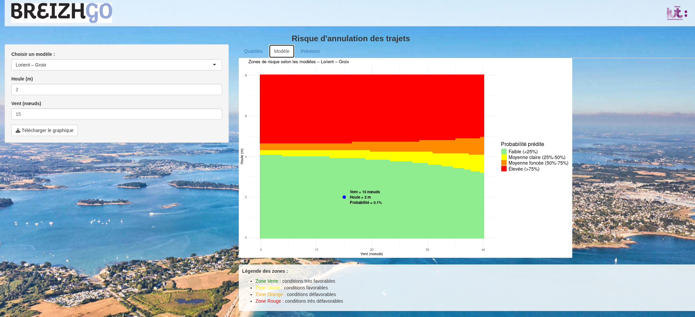
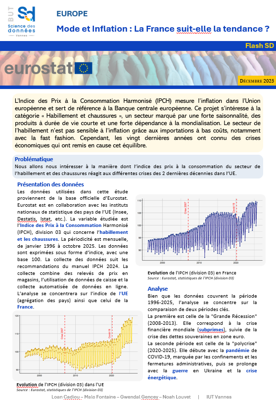
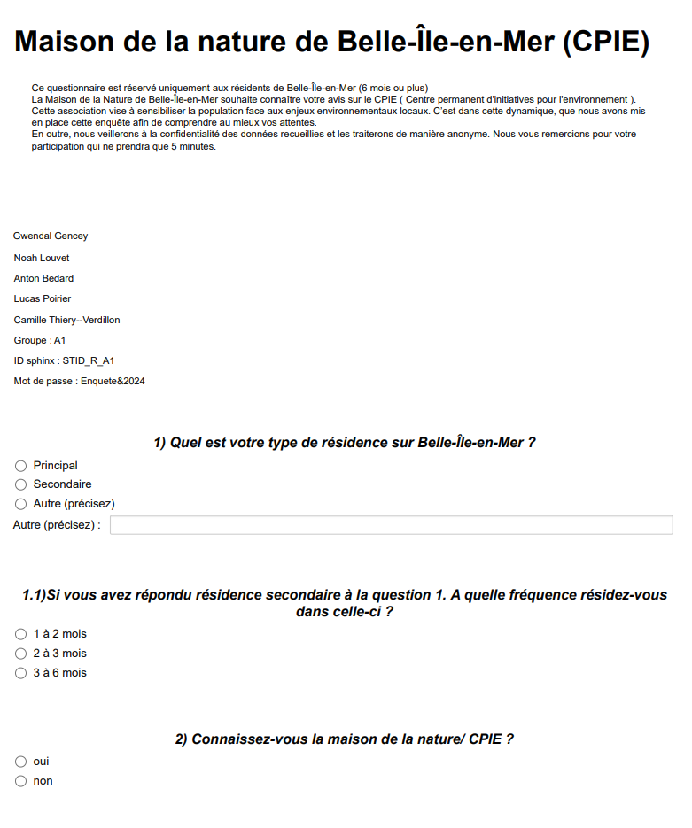
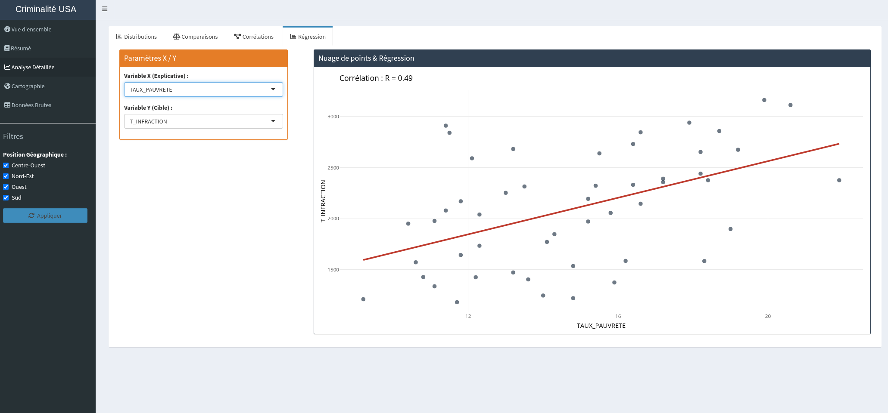
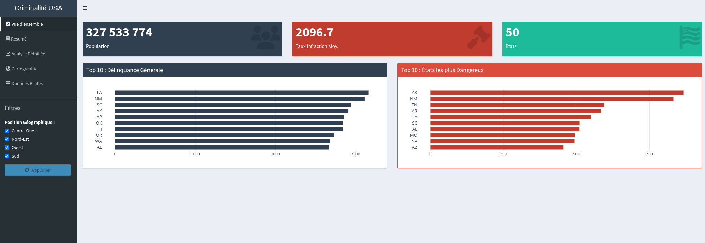
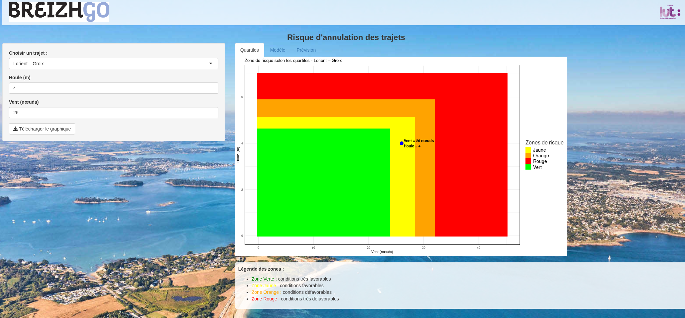
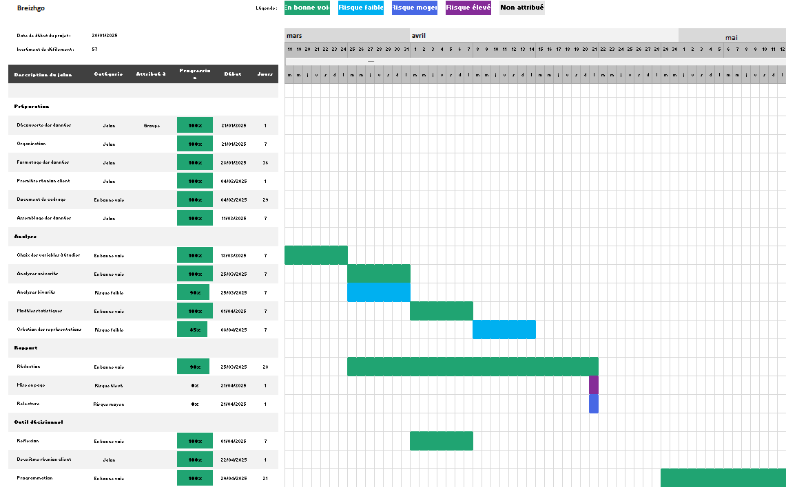

Découvrez mes réalisations académiques et options de spécialité, structurées selon le Référentiel National du BUT SD.
Organisation et centralisation des données d'itinéraires et d'horaires (formats de type GTFS) pour le réseau de transport de la région Bretagne (BreizhGO).
Modélisation du schéma de la base de données, implémentation des scripts SQL de création de tables sous PostgreSQL, et gestion des liaisons entre les tables pour garantir la cohérence des informations.

Mettre en place un processus automatisé pour nettoyer et préparer de grands volumes de données contenant des erreurs de saisie, des doublons ou des formats incorrects.
Écriture de scripts de nettoyage sous R et Python au sein de Notebooks pour isoler les anomalies, traiter les valeurs manquantes évidentes et recoder les variables pour les rendre exploitables.
Objectif à venir (La Poste) : Développer des flux de chargement automatisés à grande échelle et interroger des bases de données de taille importante (NoSQL / Spark) pour centraliser les données des capteurs de la flotte nationale.
Explorer visuellement et analyser de façon approfondie l'évolution d'indices économiques (IPCH habillement et chaussures) marqués par de fortes variations saisonnières et des crises majeures.
Utilisation de représentations graphiques avancées et croisées avec la bibliothèque ggplot2 sous R Markdown, permettant d'étudier les tendances et de structurer le rapport de synthèse.

Manipuler des données géographiques complexes pour étudier l'évolution de l'urbanisation en zone inondable (PPRI Val d'Orléans) et évaluer les risques du territoire.
Utilisation du logiciel QGIS pour effectuer des jointures spatiales entre les données et les géométries, des requêtes par emplacement et des calculs de zones tampons afin d'extraire des indicateurs précis.
Mesurer la notoriété et analyser les attentes concernant la Maison de la Nature de Belle-Île-en-Mer (CPIE) auprès des résidents de l'île.
Création du questionnaire sous Le Sphinx, tri et structuration de la base de données sous Excel, et réalisation d'analyses descriptives univariées, bivariées et de tests statistiques (Chi-deux) pour valider les liens de dépendance.

Objectif à venir (La Poste) : Développer et appliquer des modèles d'analyses statistiques approfondies sur l'évolution énergétique, le taux de vétusté et la sinistralité de la flotte nationale.
Expliquer et prédire le nombre de buts inscrits par les joueurs de handball en Bundesliga à partir d'indicateurs de performance (temps de jeu, poste, budget du club).
Ajustement de modèles de régression linéaire multiple, sélection des variables explicatives les plus adaptées, et validation des hypothèses fondamentales par l'étude des résidus (normalité, homoscédasticité).

Prédire les annulations de rotations de navires BreizhGO selon les conditions météorologiques (force du vent, hauteur de houle) pour anticiper les interruptions de service.
Entraînement de modèles d'apprentissage statistique (arbres de décision, K-NN), gestion du fort déséquilibre des données par rééchantillonnage, et évaluation des performances par les matrices de confusion et courbes ROC.
Objectif à venir (EMS) : Maîtriser et appliquer des modèles d'analyse de séries chronologiques complexes (modèles ARIMA, décompositions de tendances et saisonnalités) pour réaliser des prévisions sur l'activité logistique.
Création d'un tableau de bord interactif sous R Shiny (Criminalité USA) pour rendre des analyses statistiques descriptives et d'analyses en composantes principales (ACP) accessibles à des décideurs.
Structuration modulaire de l'application en trois fichiers (global.R pour la préparation initiale, ui.R pour l'interface utilisateur, et server.R pour la logique applicative réactive).

Restituer les résultats de l'étude des annulations de rotations auprès du client BreizhGO, tout en assurant une gestion rigoureuse de la conduite du projet.
Déploiement de l'application sur serveur cloud (Shinyapps.io). Suivi et planification du projet formalisés par la rédaction d'un cahier des charges fonctionnel et l'utilisation d'un diagramme de Gantt pour le respect des jalons.


Valoriser visuellement des indicateurs géographiques complexes sous forme de livrable de haute qualité pour l'aide à la décision territoriale.
Mise en page normée de la carte sous QGIS en appliquant les règles de la sémiologie graphique (choix des couleurs, discrétisation, échelle, légende claire) pour représenter l'urbanisation en zone inondable.
Production Cartographique Réalisée :
Ouvrir le rendu PDF de la carte QGISDifficulté : Définir les seuils de discrétisation pour représenter fidèlement l'indicateur sans fausser la perception visuelle.
Solution : Analyse de la distribution statistique des bâtiments pour appliquer une méthode adaptée limitant la perte d'information.
Objectif à venir (La Poste) : Concevoir et déployer des indicateurs stratégiques de performance (KPIs) sous Power BI pour piloter la décarbonation de la flotte de transport et scénariser l'affichage graphique.